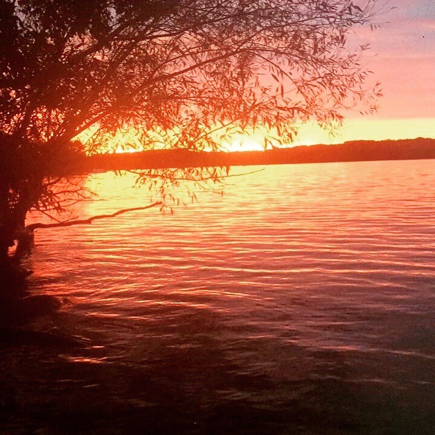

Come and learn a little bit about me
I grew up in Wisconsin, but moved around a lot as a child. My family was all born and raised in Brasil while I am the sole member of my entire family history to have been born in the United States. I have a brother who is 9 years older than me but we don't really talk much. Most of my childhood was spent in different parts of Wisconsin and also in Brasil visting my extended family.
After middle school I began to start thinking more about my person and my looks so I joined sports teams and worked to make myself a better person. I eventually became captain of the varsity tennis team and was able to get into UW Madison. Being Bi-lingual going into High School was a huge help when trying to learn a foreign language and also helped me to make friends because I was able to help them with the material. Nothing out of the ordinary happened until I went to college where about 90% of the stories I tell people come from. It honestly Astonishes me how much you can do in a couple of years. I also got a new hobby of photographing a good sight whenever I see one and have steadily built up a small collection. Here is but a taste of the pictures that I have taken (Warning, it is not good quality)
